3 Configuration
Prior to each deployment of the Mini Buoy, the data logger will need to be fully charged, have a full memory, and be correctly configured according to the user’s requirements. The following section describes how to configure the MSR145W B4 (used in both the B4 and B4+ Mini Buoy designs) and HOBO Pendant G acceleration data loggers. Select the correct tab according to the logger’s software:
The free ‘MSR’ software to configure the MSR145W B4 logger can be downloaded here. The software is only compatible with a Windows PC. The cable, provided with the logger, is used to both configure and charge the logger.
To configure the MSR145W B4:
- Download and install the MSR software onto a Windows PC
- Connect a logger via the cable provided. A yellow LED will light up on the logger, indicating the internal battery is being charged. The light will extinguish once the battery is fully charged
- Open the MSR software
The MSR software appearance differs depending on which model of MSR145W B4 was purchased. Whilst using different models does not affect the performance of a Mini Buoy, the setup procedure differs.
To confirm the model of the logger:
- Double-click
Setup
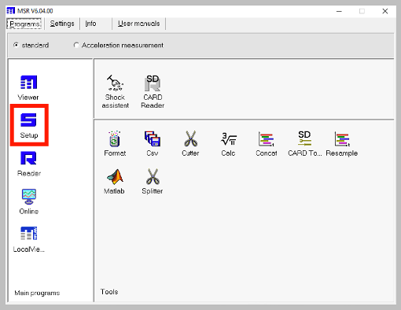
- Under
General, confirm whetherMSR typeisMSR145CorMSR145B
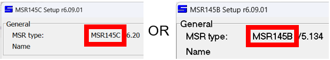
Select the correct tab to continue with the setup:
- Select the
Format memorytab - Click
Format>Yes. This will delete any data stored on the logger
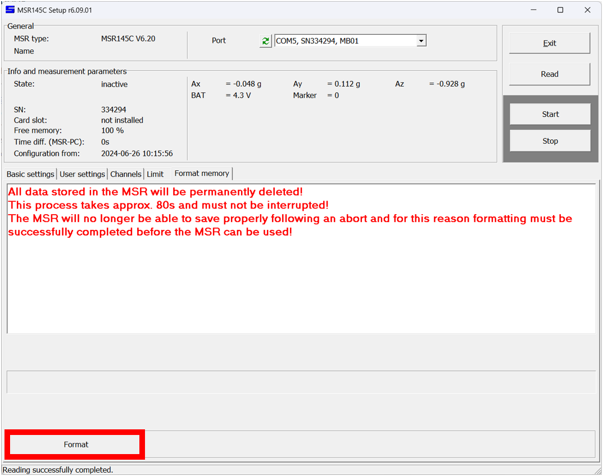
- Once formatting is complete, click
OK - Select the
Limittab - Click
Read - Select
Channel 1 | Axand clickChange - Under the
Record conditiondrop-down menu, selectnever - Click
OK - Select
Channel 3 | Azand clickChange - Under the
Record conditiondrop-down menu, selectnever - Click
OK - Click
Write
Only Channel 2 | Ay should now display always. This means only acceleration data along the y-axis will be gathered. Only y-axis acceleration data is used to measure hydrodynamics.
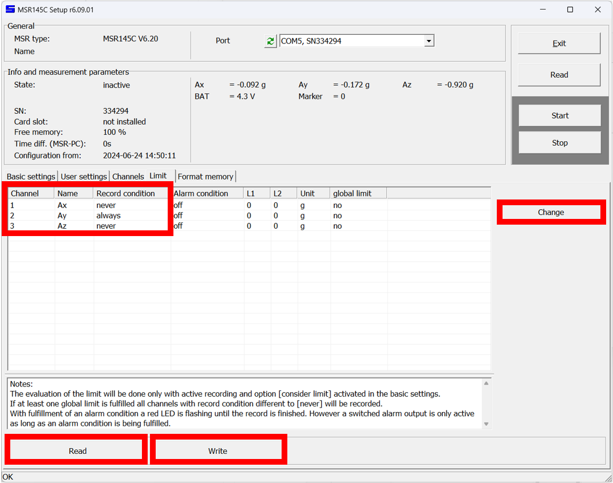
- Select the
User settingstab - Under
Info, enter a suitableName of logger - Click
Write
It is good practice to keep a record of the logger name and serial number for data analysis.
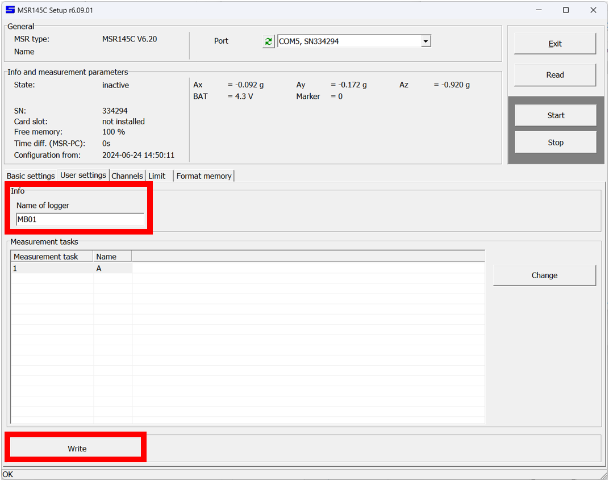
- Select the
Basic settingstab - Under
Sensors, use the drop-down menu to select a sampling rate between1sand10s
Sampling rate determines the precision of the data and the duration of a survey. A higher sampling rate improves precision but lowers survey duration. Use the table below to select an optimum balance between sampling rate and survey duration.
| Sampling rate | Survey duration |
|---|---|
| 1s | 24 days |
| 2s | 48 days |
| 5s | 120 days |
| 10s | 240 days |
- Under
Record control, checkStart at - Set the logger to
Start ata specific date and time - Check
Consider limit - Under
Options during record, uncheck all options - Click
Write basic settings - Click
Start - Under
Info and measurement parameters, confirm thatStatereadsRecord starts on yyyy-mm-dd hh:mm
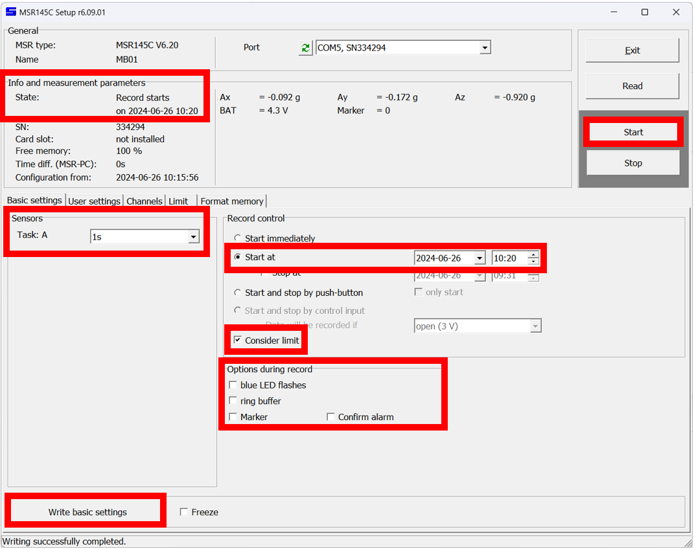
- Click
Exit - Disconnect the MSR145W B4 logger from the computer
The logger is now primed for data collection.
- Select the
Format memorytab - Click
Format>Yes. This will delete any data stored on the logger
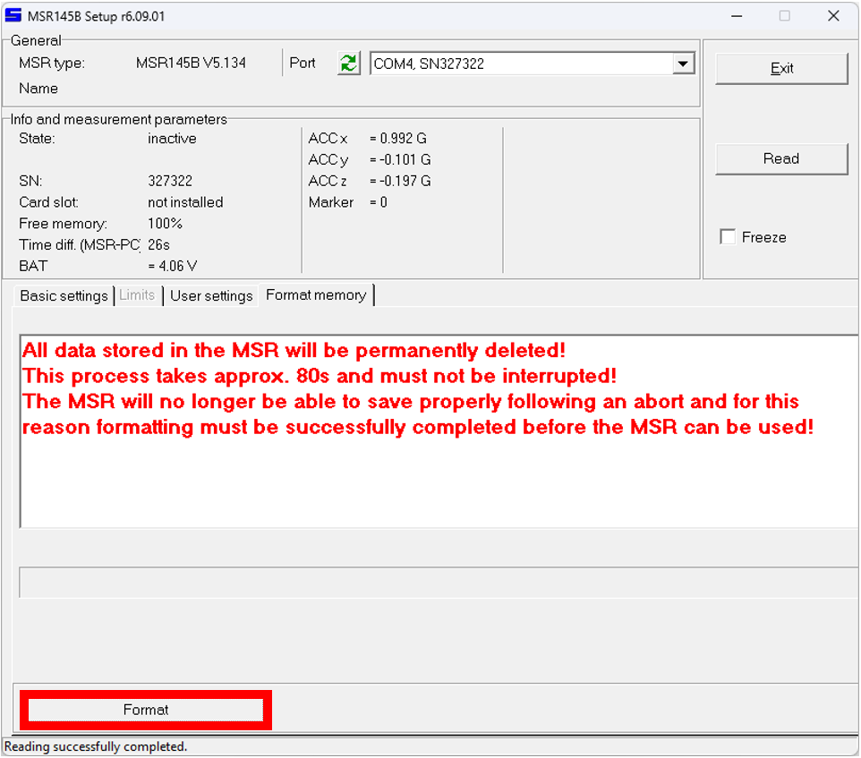
- Once formatting is complete, click
OK - Select the
User settingstab - Under
Acceleration sensor, set theMeasure rangeto2G - Under
Info, enter a suitableName of logger - Click
Write user settings
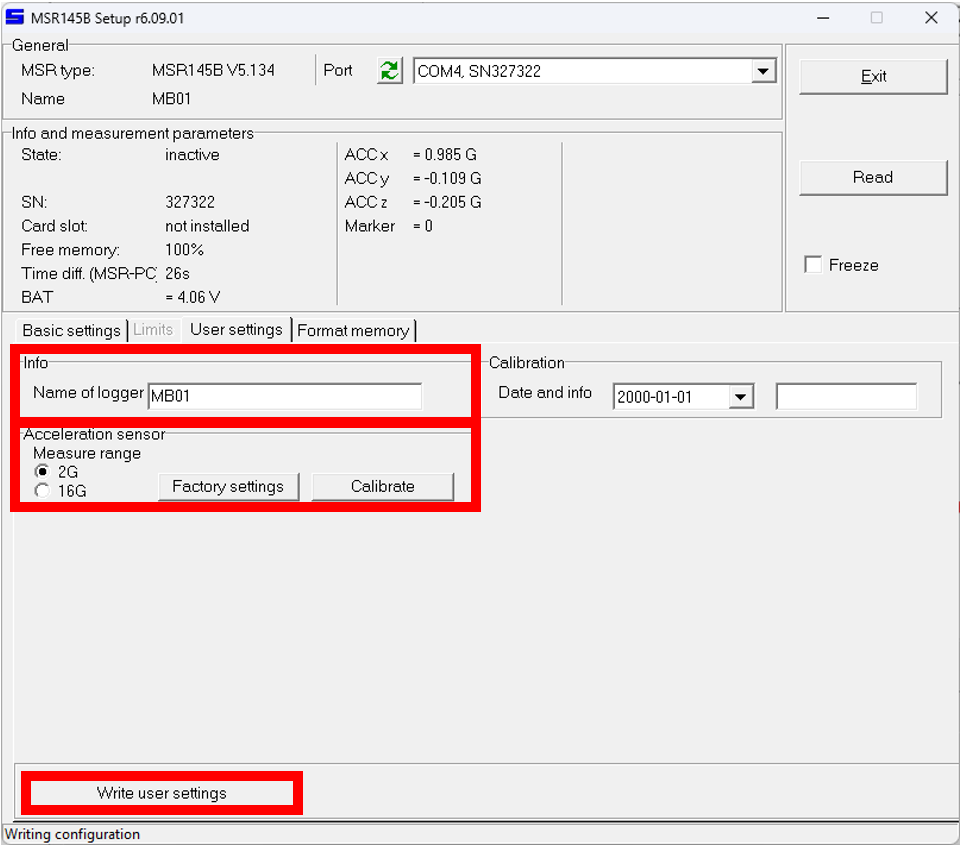
- Select the
Basic settingstab - Under
Record control, check theLimits activebox - Select the
Limitstab - Under
Record limit, use the drop-down menu forACC xto select<L1 or >L2, (Shock) - Under
Limit L1, set the value forACC xto-123(i.e. negative) - Under
Limit L1, set the value forACC xto123(i.e. positive) - Under
Record limit, use the drop-down menu forACC zto select<L1 or >L2, (Shock) - Under
Limit L1, set the value forACC zto-123(i.e. negative) - Under
Limit L1, set the value forACC zto123(i.e. positive)
Only ACC y should now display inactive. This means limits on the y-axis logger are inactive, so measurements will always be taken. For the other axes, data is only recorded if extremely high (and unrealistic) acceleration values are detected - effectively disabling them. Only y-axis acceleration data is used to measure hydrodynamics.
- Click
<
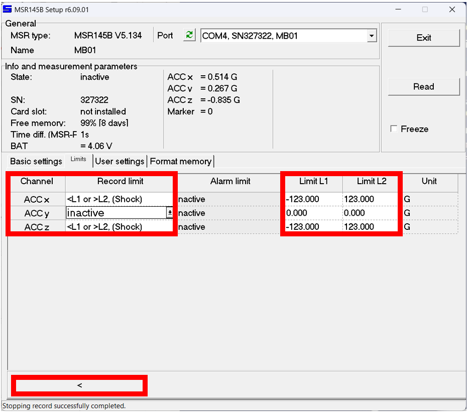
Basic settingsshould now be displayed. If not, select the tab- Under
Sensors, selectt1from theACC x, y, zdrop-down menu - Under
Main storage rate, sett1=to a sampling rate between 1 and 10 seconds
Sampling rate determines the precision of the data and the duration of a survey. A higher sampling rate improves precision but lowers survey duration. Use the table below to select an optimum balance between sampling rate and survey duration.
| Sampling rate | Survey duration |
|---|---|
| 1 | 24 days |
| 2 | 48 days |
| 3 | 72 days |
| 4 | 96 days |
| 5 | 120 days |
| 6 | 144 days |
| 7 | 168 days |
| 8 | 192 days |
| 9 | 216 days |
| 10 | 240 days |
- Under
Record control, checkStart at - Set the logger to
Start ata specific date and time - Under
Options during record, uncheck all options - Click
Write basic settings - Under
Info and measurement parameters, confirm thatStatereadsRecord starts on yyyy-mm-dd hh:mm
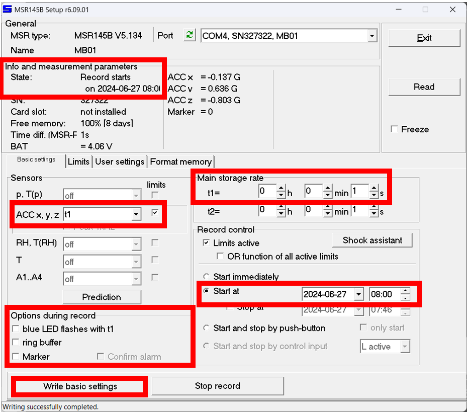
- Click
Exit - Disconnect the MSR145W B4 logger from the computer
The logger is now primed for data collection. A blue light will flash until the start date and time is reached.
The Pendant G Data Logger comes with the free HOBOware software to configure the logger. HOBOware is compatible with Windows and macOS operating systems. To configure the HOBO Pendant:
- Download and install the free HOBOware software
- Connect a logger to a computer via the HOBO Optic USB Base Station
- Open the HOBOware software
- Click the
Select Devicedrop-down menu 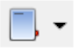 , and tick the USB or serial port tabs in congruence with how you connected the data logger to the computer - Select the
Launchicon 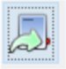 , a window will pop open where you can set a name for the logger under theNamefield. - In the
Sensorstab and in theConfigure Sensors to Logsection, check theX-Axis Acceleration (+/- 3g)box - From the
Deploymentstab, set theLogging Intervalto the desired sampling rate using the drop-down menu. Increasing the sampling rate will increase the logging duration (calculated based on the logging rate and battery status of the device).- The Mini Buoy has been calibrated to sampling rates of 1 minute, thus, this is the recommended sampling rate setting, rendering 45 logging days at full battery (refer to the table in Chapter 1 for other sampling rates that can be used with Hobo pendant G loggers).
- In the
Deploymentstab, set theStart Loggingdate and time for shortly after your planned deployment
- Click
Delayed Startand disconnect the Pendant logger from the computer.
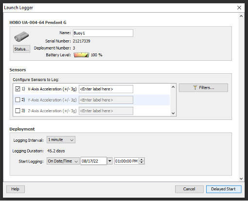